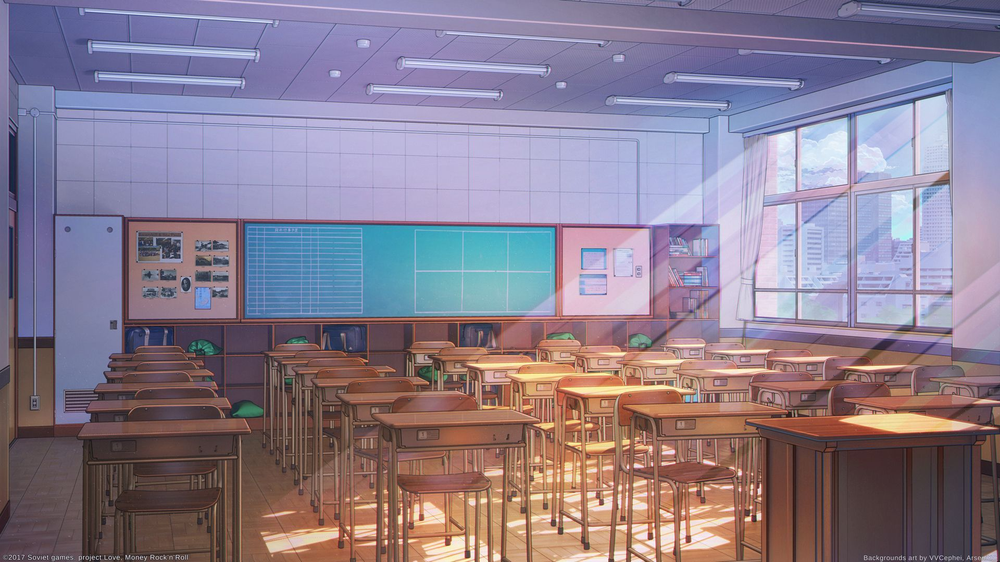

Influence of Modern Technology
The curious yet greedy nature of mankind has led us to be fascinated with every little detail from the days of wheels to the present where we are close enough to flying cars. It wouldn’t be a sin to admit that the technology and our planet has begun to co-relate, even extending beyond it to some extent. Technology has successfully surpassed its threshold right from medical advancements to entertainment. All has been catered by it.

The walls of a classroom which was a barrier for many in the past is no longer considered one, as massive amount of information is now available at one's fingertips.The technological advancement has enabled opportunities of formal learning for students by the availability of books without actually having to buying them, they can be tutored on hard topics using platforms like YouTube, w3schools, Khan Academy, Podcasts and Brainly.
A disaster could’ve occurred if we hadn’t found a way for GenZ and Gen Alpha to lift their pens. It is all in the grace of the advance in technology that we have access to online learning platforms, where both the learner and the teacher come together in a virtual conference with the intentions of sharing and gaining knowledge.
Drawbacks of Online Classes
◇ Social interaction is limited and hence students may feel
a drift in their social personas.
◇ Staring at the screen for extended hours harms our
occipital lobe.
◇ Keeping the social differences in mind, not all families can afford the
expenses that comes with the physical requirements of online classes.
The medical field has been under the impact of the continuous technological advancements and thus has saved countless lives. These technological advancements include:
Use of Electronic Health Record.
The outdated ways of storing and writing records is
highly inefficient. With the advancement in IT fields, this problem has been sorted.
Now, the data is easy to access, can be tracked easily and can facilitate limitless advances
in diagnostics and treatment. Patient’s record is now transferred faster which allows
combined efficient care.
Medical Devices.
The diagnosing process has been made much more efficient thanks to
medical technological advancement. Patients are able to monitor their health at home which
saves money and reduces unnecessary visits. The pandemic has introduced us to devices that
were not in much use like the present. Some examples of it are Portable Pulse Oximeter,
Temporal Artery Thermometer,Oxygen Tank etc.
Drawbacks
◇ Risk of Medical records getting hacked.
◇ Dangers from radiation
therapy and CT.
◇ Laser surgeries can damage cells in the body or other internal
organs.
◇ Online treatment may lead to misdiagnosis.

The repeated chaos in our everyday life makes it awfully monotonous. Thus, we search for an escape which is provided to us through the means of entertainment. It helps us loosen our grip from the constant workload and stress that we carry along from our birth. Technology has uplifted the entertainment industry to great levels The CGI effects has made movies more exciting. People have started to abandon the conventional TVs and have switched to streaming from sites.
We are also able to advertise our personal interests by publishing stories, pictures or even
start our own YouTube channel.
In today’s world, the entertainment industry also plays
a major role in boosting up a country’s economy. For instance, the South Korean boy band
“BTS’ generated an estimated $ 3.54 billion USD per year in addition to an annual $3.67
billion USD in 2018 and has predicted to reach 49.8 billion USD in 10 years.
Drawbacks
◇ Excessive usage may cause addiction.
◇ It can also lead to obsessive
behavior towards the artist, which may lead to hacking or trying to find out personal
information
about the artist.
◇ It may cause people to be disinterested and lose motivation in their
professions.
To sum it up, technology plays a significant role in almost every sector. Right from business to financial services, its contribution is remarkable. But with the undeniable advantages comes disadvantages that are difficult to be avoided. The overuses may have irreversible impacts on everyone and must be controlled.
Especially during these times where the world is concerned and centered around this pandemic, working from home is the bare minimum for the stability of the world economy. In the end, it depends upon the Potter on how the clay is molded, if used in a positive way it will guide us towards the flying cars, if not we'll be heading back to volcanic times.